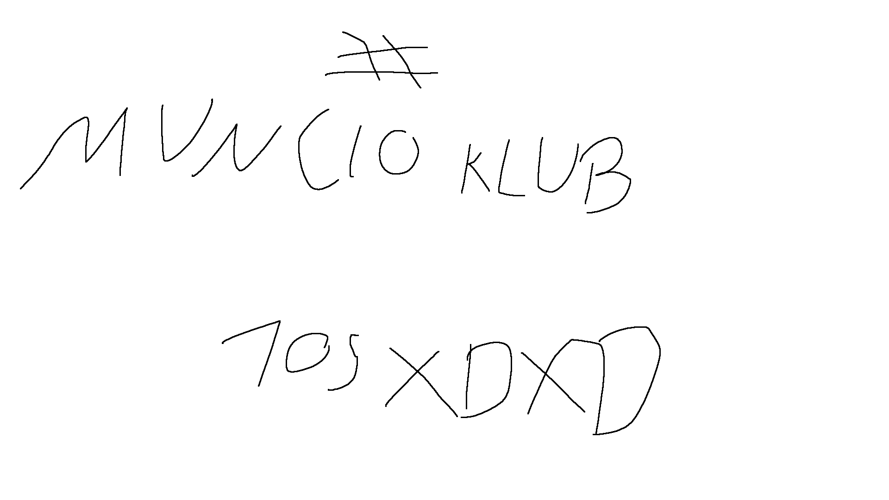

2.Muncio to mądry i inteligętny gościu
3.Muncio ma autyzm
Można by było długo wpisywać ale to może na osobnej stronie
lineczek do powodów do bycia kolegą muncia Zapraszam na mojego tylko fani 🪝MUNCIO TO MĄDRY MĄDRALA CZY COŚ

Zapraszam na nową stronę poświęconą nowością ze świata systemu dla konfidentów! (outdated)
Link do strony z newsami105 TEAM pozdrawia essa
